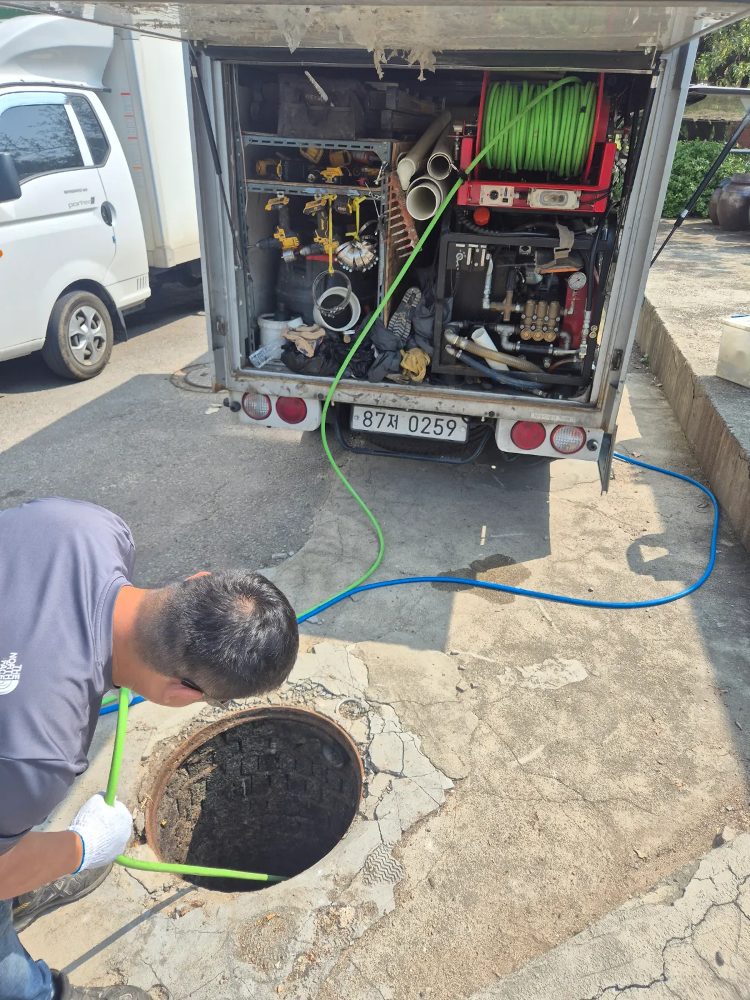
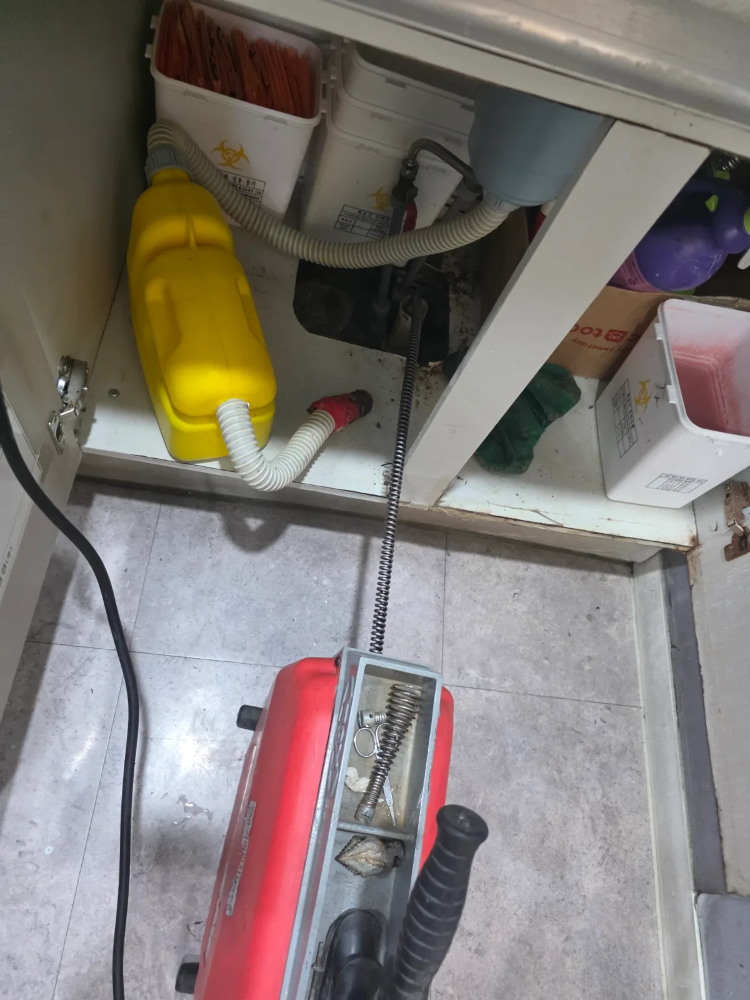
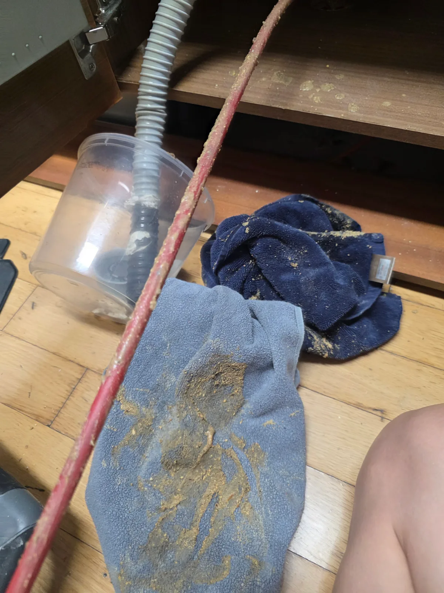
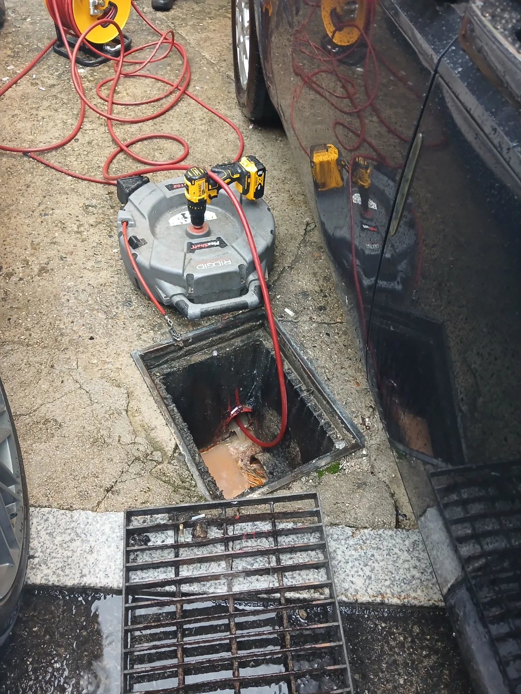
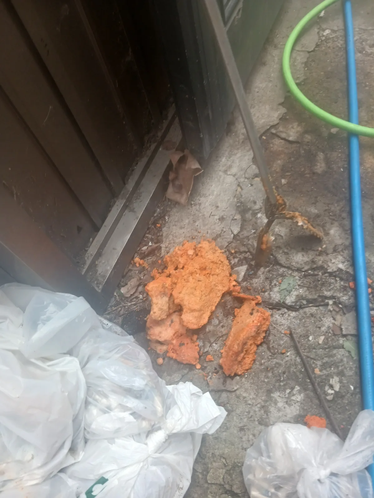
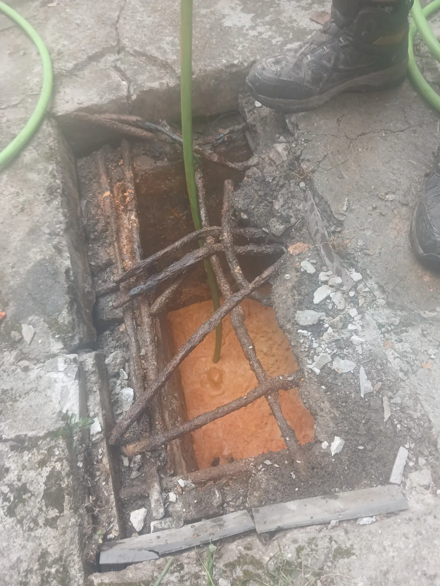

파주시 야당동 하수구막힘 | 8개월 만에 재발한 공용배관 역구배 구간 집중 고압세척
파주시 야당동 하수구막힘 야당동에서 약 8개월 만에 재발한 공용배관 막힘 현장입니다 배관 전 구간 고압세척과 역구배 구간 집중 세척으로 막힘을
서울 · 경기 · 인천 실제 작업 기록
배관과 공용배관의 오염물을 고압세척한 실제 작업 기록입니다.
파주시 야당동 하수구막힘 야당동에서 약 8개월 만에 재발한 공용배관 막힘 현장입니다 배관 전 구간 고압세척과 역구배 구간 집중 세척으로 막힘을

광진구 능동 싱크대막힘 서울 광진구 능동의 외국인 이용객이 많은 숙소에서 싱크대 역류가 발생했습니다 오후 투숙객 입실을 앞두고 긴급 출동해

성남시 분당구 판교동 하수구막힘 판교동에서 심야에 발생한 공용 오수배관 막힘 현장입니다 리지드 샤프트로 굳은 기름때를 1차 제거하고 주변 소음을

중랑구 면목동 하수구막힘 면목동에서 1층 여러 세대가 동시에 막히고 역류하는 증상을 확인해 공용 하수배관 문제를 의심했고 출수관을 추적한 뒤

수지구 신봉동 싱크대막힘 싱크대에서 배수가 되지 않고 역류가 발생한 현장으로 배관내시경 확인 후 석션과 샤프트로 기름때와 퇴적물을 제거하고

시흥시 과림동 하수구막힘 신라건축설비가 시흥시 과림동에서 식당 배수 연결 배관과 맨홀 출수관의 막힘을 고압세척으로 해소했습니다 배수를 회복한 뒤

서초구 양재동 싱크대막힘 현장에서 실내 배관과 공용배관을 함께 점검한 뒤 샤프트 작업과 고압세척으로 하수구막힘을 해결했습니다

서울 강남구 개포동 싱크대막힘 신라건축설비가 개포동 싱크대 하부 배관을 내시경으로 점검하고 샤프트로 내부 축적물을 제거한 뒤 고압세척과 내시경

동대문구 장안동 변기막힘 병원 원장님이 직접 의뢰한 변기막힘 현장에서 변기를 탈거하자 하부 오수관에 물이 차 있었습니다 배관 내시경으로 내부

송파구 잠실동 변기막힘 현장에서 관통기와 석션이 듣지 않아 변기를 탈거한 결과 오수관이 가득 차 있었고 204샤프트와 내시경검사 후 정화조

용산구 이촌동 배관공사 공용배관 고압세척과 굴착 진단 후 파손부를 새 배관으로 연결 보강하고 통수검사 및 몰탈 마감

송파구 석촌동 변기막힘 실내 관통과 내시경 진단 후 외부 오수관까지 추적해 고압세척 및 통수 작업 진행

중구 필동 하수구막힘 내시경으로 위치를 확인하며 관통기와 샤프트로 대형 스펀지를 회수하고 고압세척으로 잔여물 정리

강남구 역삼동 하수구막힘 병원 배수구를 스프링으로 먼저 관통한 뒤 고압세척으로 잔여 이물질을 제거하고 배수 확인

강동구 암사동 싱크대막힘 아파트 싱크대 기름때를 샤프트로 분쇄하고 고압세척으로 잔여 오염물을 제거한 뒤 배수 확인

구리시 수택동 하수구막힘 학교 급식실 배관을 내시경으로 확인하고 샤프트와 고압세척으로 기름때 및 음식물 제거

송파구 방이동 하수구막힘 감자탕 식당 외부 집수정에서 배관에 접근해 샤프트와 고압세척으로 유지방을 제거하고 통수 확인

광진구 자양동 하수구막힘 외부 배수구의 붉게 굳은 유지방을 제거하고 배관에 남은 기름때와 음식물을 고압세척

부평구 갈산동 하수구막힘 기름 섞인 오수로 가득 찬 외부 집수정을 확인하고 배관 유지분과 음식물을 고압세척으로 제거

강동구 명일동 고압세척 변기 역류로 집수정과 정화조 합류 출수관을 점검하고 고압세척 및 샤프트로 막힘 관통

송파구 가락동 변기막힘 바닥으로 넘친 변기 역류 원인을 확인하고 외부 오수관 타공과 고압세척 후 내시경으로 배수 확인

성동구 성수동 하수구막힘 석션과 내시경으로 막힘 구간을 확인하고 고압세척으로 기름 슬러지를 제거해 배수 회복